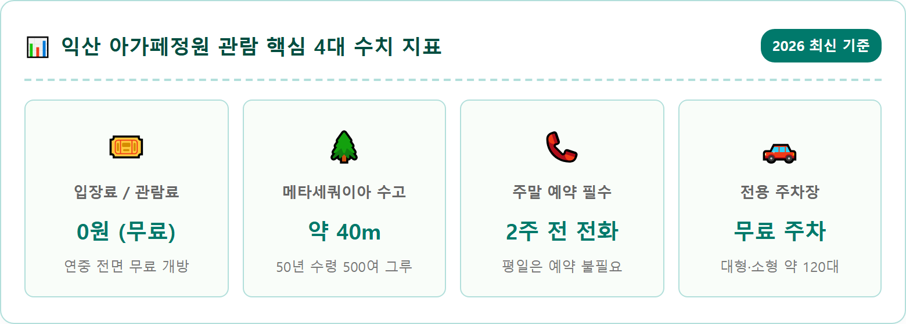
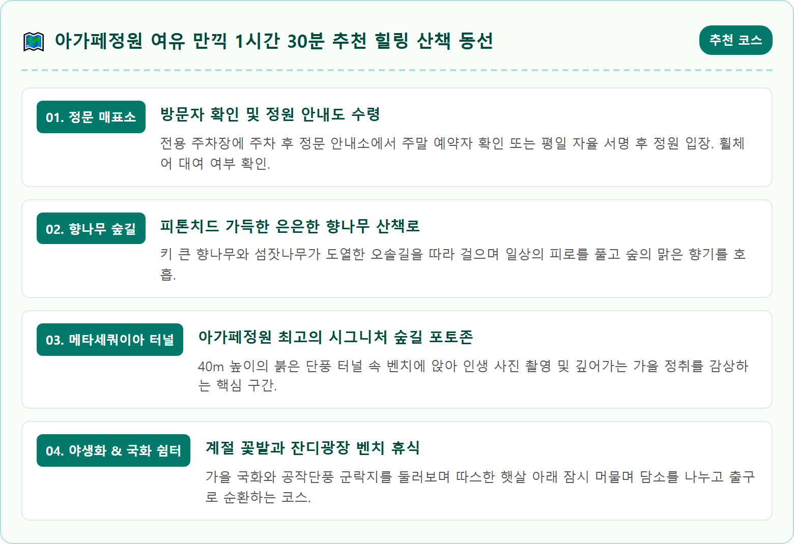
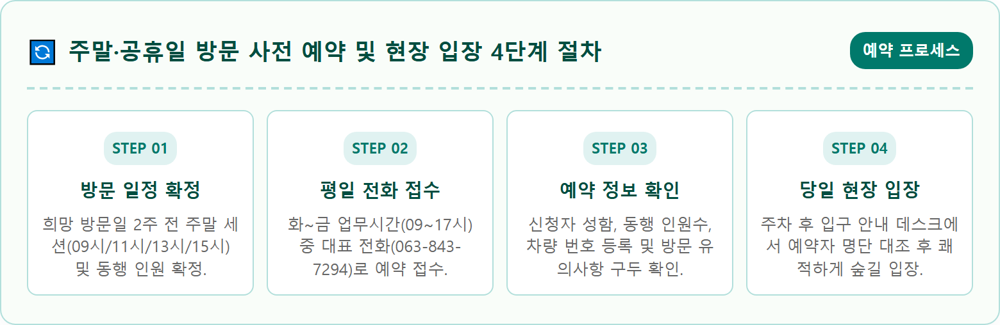
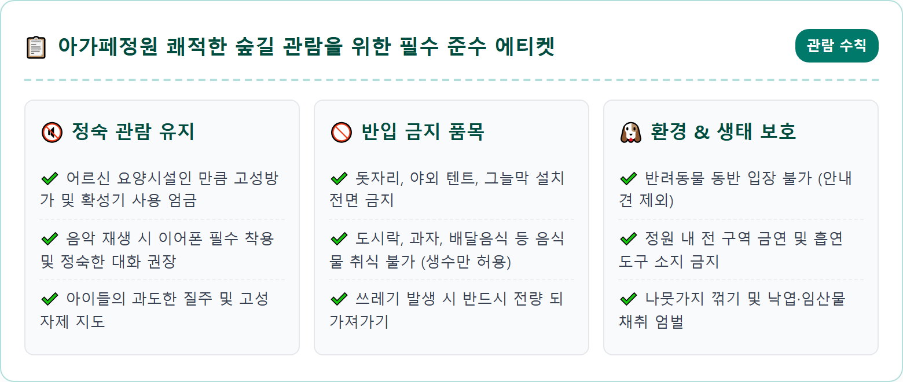
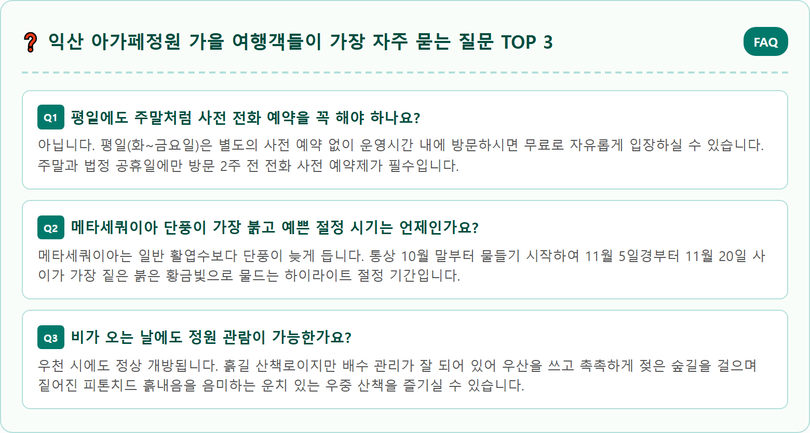

A breathtaking wide-angle shot of a towering metasequoia pathway bathed in warm autumn golden hour light at Agape Garden in Iksan Korea. Tall 40-meter metasequoia trees line both sides creating an enchanting natural cathedral arched tunnel with deep orange and rust-colored autumn needles covering the forest path. Soft golden sunbeams filter through the canopy illuminating wooden benches and walking trails. Ultra realistic photography, 8k resolution, authentic natural atmosphere, perfectly balanced colors, cinematic depth of field.

전라북도 익산시 황등면에 자리 잡은 아가페정원은 하늘을 찌를 듯 솟아오른 40m 높이의 메타세쿼이아 수백 그루가 장엄한 터널을 이루는 호남 최고의 가을 힐링 명소입니다. 원래 어르신들을 위한 무료 양로시설인 아가페정양원 내부의 개인 수목원이었으나, 숲의 치유 가치를 나누고자 지난 2021년 3월 전라북도 제4호 민간정원으로 정식 지정되면서 일반 시민들에게 문을 열었습니다. 번화한 도심을 벗어나 황등면의 한적한 시골길을 따라 들어서면, 마치 거대한 녹색 성벽처럼 솟아오른 메타세쿼이아 숲이 방문객을 압도적인 스케일로 맞이합니다.
봄에는 수선화와 튤립, 여름에는 배롱나무와 수국이 화려한 꽃물결을 이루지만, 아가페정원이 가장 아름다운 절정을 맞이하는 계절은 단연 만추의 계절 10월 말부터 11월 중순까지입니다. 가을이 깊어지면 푸르렀던 메타세쿼이아 잎이 붉은빛이 감도는 황금 갈색으로 물들고, 그 아래로 공작단풍과 은행나무, 사철나무가 어우러져 한 폭의 유채화 같은 풍광을 연출합니다. 나뭇잎 사이로 부서져 내리는 가을 햇살은 숲 바닥에 긴 그림자를 드리우며 세상 어디에서도 보기 힘든 낭만적인 분위기를 자아냅니다.
특히 아가페정원의 가장 큰 장점은 상업적인 관광지와 달리 고즈넉하고 평온한 숲의 온기를 온몸으로 느낄 수 있다는 점입니다. 흙길로 잘 다져진 평탄한 무장애 산책로 덕분에 유모차를 동반한 가족 단위 나들이객이나 연로하신 부모님을 모시고 걷기에도 부담이 없습니다. 사방에서 들려오는 청아한 산새 소리와 발밑에서 바스락거리는 낙엽 밟는 소리는 도시 생활에 지친 현대인들에게 깊은 정서적 휴식을 선사합니다. 이번 가을 비밀스러운 숲속 산책을 계획하신다면 반드시 알아두어야 할 운영시간과 예약 팁, 포토존 위치를 상세히 정리해 드립니다.
아가페정원이 오늘날과 같은 장엄한 숲을 이루게 된 배경에는 한 성직자의 깊은 사랑과 헌신이 깃들어 있습니다. 1970년 고(故) 서정수 신부가 의지할 곳 없는 무의탁 노인들을 위한 안식처로 아가페정양원을 설립하면서 노인들의 정서적 안정과 평안한 여생을 돕기 위해 주변 부지에 나무를 한 그루씩 심기 시작한 것이 이 숲의 출발점이었습니다. 당시만 해도 척박했던 황무지였으나, 서 신부와 직원들은 노인들이 여생 동안 숲 그늘에서 편히 쉬고 맑은 공기를 마실 수 있도록 정성을 다해 묘목을 심고 가꾸었습니다.
설립 당시부터 50여 년이 넘는 세월 동안 정성스레 심고 가꿔온 수목들은 메타세쿼이아를 비롯해 섬잣나무, 공작단풍, 은행나무, 주목 등 수만 그루에 달합니다. 특히 숲 한가운데 자리 잡은 메타세쿼이아 산책길은 나무들이 자라면서 가지가 서로 맞닿아 마치 거대한 성당의 높은 아치형 천장을 연상케 하는 웅장함을 자랑합니다. 반세기라는 긴 시간 동안 사람의 손길과 자연의 순리가 어우러져 이토록 거대한 숲의 기적이 탄생한 것입니다.
수십 년간 외부인의 발길이 닿지 않았던 이 비밀의 숲은 산림청과 전라북도의 지원을 거쳐 탐방로와 포토존, 편의 쉼터를 보강하며 2021년 비로소 일반에 개방되었습니다. 숲길을 걷다 보면 단순한 자연경관을 넘어, 반세기 동안 이어진 따뜻한 돌봄과 생명 존중의 역사적 숨결이 고스란히 전해져 깊은 위로를 받게 됩니다. 방문객들 역시 이러한 설립 취지를 존중하여 경건하고 차분한 마음가짐으로 숲을 대하게 됩니다.

아가페정원의 대표 자랑거리인 메타세쿼이아 산책로는 양옆으로 수령 50년 안팎의 거목 500여 그루가 빽빽하게 줄지어 있어 경이로운 원근감을 선사합니다. 메타세쿼이아는 일반 활엽수 단풍보다 약 1~2주 정도 물드는 시기가 늦은 편입니다. 통상 10월 중순까지는 푸른 잎을 유지하다가 10월 말부터 서서히 잎 끝이 노랗게 변하기 시작하며, 11월 5일에서 11월 20일 사이에 깊고 진한 적갈색 단풍의 절정을 맞이합니다.
이 시기에 정원을 방문하면 바닥에 두껍게 깔린 푹신한 메타세쿼이아 낙엽 융단과 머리 위로 펼쳐진 붉은 수관이 완벽한 가을 터널을 만들어냅니다. 가장 인기 있는 포토존은 산책로 중간 지점에 놓인 하얀 목재 벤치입니다. 벤치에 앉아 뒤편으로 끝없이 이어지는 나무 기둥들을 소실점 구도로 잡고 촬영하면 동화 속 한 장면 같은 인생 사진을 남길 수 있습니다. 벤치 주변으로는 나뭇잎 사이로 스며드는 빛줄기가 환상적인 림라이트 효과를 만들어냅니다.
사진 촬영 꿀팁으로는 오전 10시 전후나 오후 2시에서 3시경, 숲 사이로 부드러운 사광선이 쏟아져 내리는 시간대를 추천합니다. 나뭇잎 사이로 번지는 틴들 현상(빛내림)과 황금빛 역광이 어우러지면 스마트폰 기본 카메라로도 별도의 필터 없이 감성적인 결과물을 얻을 수 있습니다. 또한 광각 렌즈를 활용해 로우 앵글로 나무 끝을 향해 올려다보며 촬영하면 40m에 달하는 거목의 웅장한 높이감이 사진에 생생하게 담깁니다.
아가페정원을 방문할 때 가장 유의해야 할 핵심 사항은 바로 **주말 및 공휴일 100% 사전 예약제**입니다. 평일(화~금요일)에는 예약 없이 운영시간 내에 방문하여 자유롭게 관람할 수 있지만, 토요일과 일요일 및 법정 공휴일에는 관람객 과밀을 방지하고 정원의 정숙한 분위기를 유지하기 위해 사전 예약자만 입장이 허용됩니다. 무턱대고 주말에 예약 없이 방문했다가는 입구에서 발길을 돌려야 하므로 주의가 필요합니다.
예약은 온라인 인터넷 사이트가 아닌 **전화 접수(063-843-7294)**로만 진행됩니다. 방문 예정일로부터 최소 2주 전부터 접수를 받으며, 관람 시간대는 오전 9시, 11시, 오후 1시, 3시 등 2시간 단위 세션으로 나누어 신청하게 됩니다. 가을 단풍 피크철인 10월 말과 11월 주말은 예약 오픈과 동시에 빠르게 마감되므로 여행 일정이 확정되는 즉시 서둘러 예약 전화를 거셔야 합니다. 예약 시 관람 희망 날짜와 시간대, 차량 수량을 정확히 전달해야 합니다.
예약 전화를 걸 때 주의할 점은 정원 정기 휴무일인 월요일이나 주말에는 사무실 전화 연결이 어렵다는 점입니다. 반드시 평일 화요일부터 금요일 사이 오전 9시에서 오후 5시 사이에 통화를 시도하시기 바랍니다. 예약 시 대표자 성함과 연락처, 방문 인원수, 차량 번호를 알려주면 현장에서 본인 확인 후 곧바로 입장 티켓(확인증)을 교부받게 됩니다. 만약 부득이하게 일정이 취소될 경우 다른 대기자를 위해 미리 취소 전화를 해주는 성숙한 시민의식이 필요합니다.

아가페정원의 관람 시간은 계절의 일조 시간에 따라 하절기와 동절기로 세분화되어 운영되므로 방문 전 정확한 마감 시간을 체크하셔야 합니다. 3월부터 10월까지 적용되는 하절기에는 오전 9시에 개방하여 오후 5시에 문을 닫으며, 정원 입장은 운영 종료 1시간 전인 오후 4시에 최종 마감됩니다. 10월 말까지는 비교적 해가 길어 늦은 오후 4시경에 입장해도 노을빛을 감상하며 산책할 수 있습니다.
반면 날이 일찍 저무는 11월부터 이듬해 2월까지의 동절기에는 오전 9시에 오픈하여 오후 4시에 조기 마감하며, 입장 마감 시각 역시 오후 3시로 1시간 앞당겨집니다. 가을 단풍이 절정을 이루는 11월 초순에는 동절기 운영 규정이 적용되므로, 오후 늦게 방문할 경우 입장이 제한될 수 있어 가급적 낮 1시에서 2시 이전에 여유롭게 도착하시는 일정을 권장합니다. 숲 내부에는 야간 조명 시설이 설치되어 있지 않아 해가 지면 급격히 어두워집니다.
또한 매주 월요일은 정원 내 시설 정비 및 식물 보호, 어르신들의 평온한 휴식을 위한 정기 휴원일입니다. 만약 월요일이 대체공휴일 등 공휴일과 겹치는 경우에는 정상 개방 후 화요일에 대체 휴원하는 경우가 있으므로, 연휴 기간 방문 시에는 사전에 전화 문의를 통해 개방 여부를 재확인하시는 것이 안전합니다. 비나 눈이 오는 궂은 날씨에도 기본적으로 개방되지만, 강풍이나 폭설 등 기상 특보 시에는 안전을 위해 임시 휴원될 수 있습니다.
아가페정원은 설립자의 숭고한 나눔 정신에 따라 방문객 누구나 부담 없이 찾을 수 있도록 **입장료와 관람료를 전액 무료**로 운영하고 있습니다. 전국적으로 유명한 민간 정원들이 대부분 1만 원 안팎의 입장료를 받는 것과 대조적으로, 아가페정원은 무료 개방을 유지하며 방문객들의 자발적인 환경 정화와 질서 유지를 당부하고 있습니다.
주차 공간 역시 정원 입구 바로 맞은편과 주변 공터에 전용 주차장이 널찍하게 마련되어 있으며, 주차 요금 또한 전액 무료입니다. 대형 관광버스 10여 대와 승용차 120대 이상을 동시에 수용할 수 있는 아스팔트 및 자갈 포장 주차장으로 조성되어 있습니다. 주말 피크 시간대에는 자원봉사자 및 안내 요원이 배치되어 진입 차량의 주차 위치를 친절하게 유도해 주므로 초보 운전자도 주차가 수월합니다.
주차장 인근에는 깨끗하게 관리되는 수세식 남녀 화장실과 간단한 정원 안내 리플릿을 배부하는 안내 데스크가 위치해 있습니다. 정원 내부로 들어서면 자연 보존을 위해 별도의 매점, 자판기, 상업 시설이 일체 운영되지 않습니다. 따라서 관람 전 필요한 생수나 개인 상비약, 티슈 등은 미리 차에서 챙겨 들어가시는 것이 훨씬 쾌적합니다.

아가페정원을 방문할 때 무엇보다 가슴속에 깊이 새겨야 할 점은 이곳이 단순한 유원지나 상업 테마파크가 아니라, 몸이 불편하신 어르신들이 평생을 기대어 살아가는 복지 요양시설의 생활공간이라는 사실입니다. 따라서 어르신들의 평온한 일상과 요양 환경을 해치지 않도록 세심한 관람 예절을 지키는 것이 기본이자 필수적인 덕목입니다. 방문객의 작은 부주의가 어르신들에게는 큰 스트레스가 될 수 있습니다.
첫째, 정원 내에서는 고성방가나 대형 확성기, 블루투스 스피커 사용이 엄격히 금지됩니다. 아름다운 새소리와 바람에 흔들리는 나뭇잎 소리에 귀를 기울이며 조용조용 대화를 나누는 정숙 관람을 실천해야 합니다. 둘째, 정원 내 돗자리나 텐트, 그늘막 설치는 불가능하며, 생수와 개인 음료를 제외한 도시락, 과자, 배달 음식 등 모든 취식 행위가 제한됩니다. 쓰레기통이 설치되어 있지 않으므로 발생한 쓰레기는 반드시 되가져가야 합니다.
셋째, 반려동물의 동반 입장은 정원 생태계와 시설 내 어르신들의 안전을 위해 불가능하므로 반려견과 함께하는 여행객은 사전 계획 시 유의하셔야 합니다. 넷째, 정원 내 전 구역은 엄격한 금연구역으로 지정되어 있으며, 화재 예방을 위해 라이터 등 인화물질 소지도 자제해야 합니다. 또한 정해진 산책로 밖의 화단이나 숲속 풀밭으로 무단 침입해 사진을 찍는 행위는 소중한 식물의 뿌리를 다치게 하므로 삼가야 합니다. 아름다운 정원을 무료로 개방해 준 따뜻한 뜻에 감사하는 마음으로 깨끗하고 품격 있는 관람 문화를 보여주어야 합니다.
아가페정원은 전체 부지가 약 3만 5천 평에 달하지만 관람 동선이 짜임새 있게 연결되어 있어 보통 1시간에서 1시간 30분 정도면 숲 전체를 여유롭게 둘러볼 수 있습니다. 추천하는 대표 산책로는 주차장 입구를 시작으로 향나무 산책로, 메타세쿼이아 길, 야생화 정원, 잔디광장을 순환하는 코스입니다. 걸음이 느린 어르신이나 아이들과 동행할 경우 2시간 정도 넉넉하게 일정을 잡는 것이 좋습니다.
입구를 지나 먼저 만나게 되는 향나무 길은 둥글게 전지된 향나무와 곧게 뻗은 섬잣나무가 도열하여 깊고 맑은 숲 내음을 뿜어냅니다. 이 길을 따라 천천히 걸어가면 시야가 확 트이면서 아가페정원의 하이라이트인 메타세쿼이아 산책로가 웅장한 자태를 드러냅니다. 직선으로 길게 뻗은 이 길은 양옆으로 서 있는 거목들이 하늘을 가려 터널을 형성하며 장관을 이룹니다. 흙길이 부드러워 맨발 걷기를 즐기는 탐방객들도 종종 눈에 띕니다.
산책로 중간중간에는 나뭇결을 그대로 살린 통나무 벤치와 정자 쉼터가 마련되어 있어 걷다가 지친 다리를 쉬어가기에 좋습니다. 숲길을 빠져나오면 아기자기하게 꾸며진 야생화 정원과 가을 국화 군락지가 펼쳐져 메타세쿼이아와는 또 다른 다채로운 색감의 가을꽃들을 감상할 수 있습니다. 휠체어나 유모차도 무리 없이 이동할 수 있도록 턱이 없고 경사로가 완만하게 다듬어져 있어 남녀노소 누구나 편안하게 즐길 수 있는 호남 최고의 무장애 나들이 코스입니다.
아가페정원을 둘러본 후 함께 연계하기 가장 좋은 가을 여행지로는 자동차로 약 15분 거리에 위치한 **국보 익산 미륵사지**와 **국립익산박물관**이 손꼽힙니다. 백제 무왕 대에 창건된 미륵사지는 광활하게 트인 잔디밭 위로 동탑과 서탑이 위풍당당하게 서 있어 가을 하늘과 어우러진 고대 백제의 웅혼한 기상을 느끼기에 최적의 장소입니다. 가을바람에 흔들리는 억새와 거대한 석탑이 자아내는 고즈넉함은 아가페정원의 숲 산책과 완벽한 조화를 이룹니다.
특히 미륵사지 앞마당에 자리한 두 개의 연못 주변으로는 가을 갈대와 억새가 은빛 물결을 이루며, 연못 수면에 반영되는 미륵사지 석탑의 가을 노을은 전국적인 출사 명소로 유명합니다. 또한 복합 문화공간으로 조성된 국립익산박물관은 유적의 경관을 훼손하지 않도록 지하에 지어진 국내 유일의 유적밀착형 박물관으로, 백제 무왕의 사리장엄구 등 찬란한 금제 유물들을 감상할 수 있습니다. 입장료와 주차료가 모두 무료여서 가성비 최고의 가족 문화 여행지입니다.
미식 탐방을 즐기신다면 아가페정원이 위치한 황등면의 대표 향토 음식인 **황등 육회비빔밥**을 강력 추천합니다. 토렴한 밥에 신선한 한우 육회와 선짓국을 곁들여 내는 황등비빔밥은 100년 전통을 자랑하며 전국 식도락가들의 입맛을 사로잡고 있습니다. 식사 후에는 황등면 인근의 고즈넉한 한옥 카페에서 대추차 한 잔을 즐기며 여유를 만끽할 수 있습니다. 자연 힐링 산책과 찬란한 역사 탐방, 그리고 든든한 지역 미식까지 아우르는 완벽한 익산 가을 하루 코스를 완성해 보시기 바랍니다.
